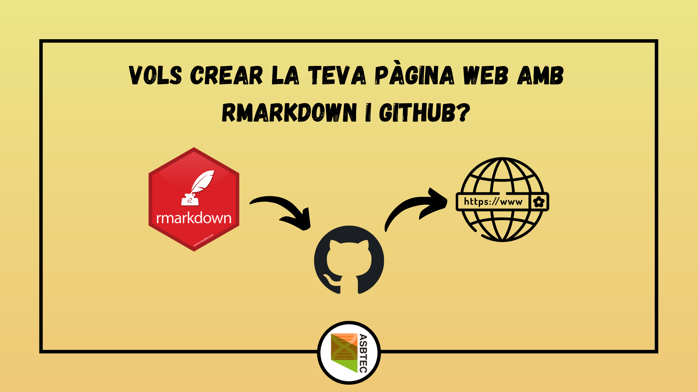

R és un llenguatge de programació/scripting amb el qual es poden fer infinitat de coses: tractament i visualització de dades, anàlisis estadístiques, anàlisis de dades òmiques i altres tipus de dades biològiques (ep, això és interessant per a nosaltres, biotecnòlegs!) i, si ens endinsem a la fusió d’R amb Markdown (Rmarkdown) fins i tot currículums vitae, pàgines web i blogs.
Doncs avui ens interessa publicar una pàgina web o blog propi mitjançant Rmarkdown i el que s’anomena GitHub pages. Sí, ja sabem que podem fer una pàgina web de manera més senzilla (o no) i amb una interfície gràfica més fàcil d’utilitzar mitjançant Wordpress o altres plataformes web, però sempre és útil saber com fer-ho des d’altres plataformes, ja sigui fent servir HTML, CSS i PHP o fent servir Rmarkdown per a crear arxius HTML de la nostra pàgina.
A més, si utilitzem Rmarkdown, podrem publicar fragments de codi i anàlisis que fem en el nostre dia a dia i que ens pot interessar donar a conèixer a altres persones, cosa que és una mica menys senzill mitjançant plataformes que no siguin Rmarkdown. Per exemple, aquesta publicació està feta a partir d’un fitxer Rmarkdown i publicada a un lloc web que funciona amb Wordpress, però per a fer això, he hagut de copiar tot el codi HTML creat a partir del fitxer .Rmd i copiar-lo a una entrada del blog de Wordpress, mentre que amb GitHub pages hagués sigut tant senzill com una ordre al terminal del sistema o com carregar el fitxer sencer al repositori de GitHub on tinc tota la meva pàgina web.
Primer de tot, cal recalcar que farà falta tenir determinats requeriments:
Una de les coses que necessitarem decidir és si volem una web o un blog… però quina és la diferència entre aquestes dues coses?
La diferència és senzilla:
La majoria de pàgines web personals publicades a partir del mètode que explicarem aquí, així com aquelles publicades amb Wordpress i altres, consisteixen en blogs o tenen algun blog enllaçat, però no és estrictament necessari crear un blog si no tenim pensat fer publicacions de manera habitual.
Conèixer R i RStudio, així com la sintaxi d’Rmarkdown és una cosa que durem a terme en el nostre primer curs Inicia’t a R, un curs escrit íntegrament en català dedicat als socis de l’ASBTEC. Per tant, això ens ho saltarem i explicarem el que és GitHub i de què es tracta.
GitHub és una plataforma per a l’emmagatzematge de codi que permet la col·laboració entre desenvolupadors i el que s’anomena control de versió, que no és res més que un conjunt d’eines de desenvolupament de software que ens ajuden a veure els canvis que hem dut a terme en un codi concret al llarg del temps.
Per a fer-ho més simple, podríem dir que GitHub (així com les altres plataformes) és una mena de xarxa social on els usuaris creen repositoris de codi (el que serien les publicacions) que van actualitzant a mesura que milloren o canvien aquest codi.
Per a crear un compte, simplement hem d’anar a https://github.com i clicar a Sign up, senzill oi? Una vegada tinguem el compte creat, podrem configurar el nostre perfil i crear els repositoris que volguem, mitjançant la icona de dalt a la dreta.
Nosaltres generarem tots els fitxers HTML mitjançant Rmarkdown i publicarem la nostra pàgina de manera gratuïta a GitHub pages mitjançant un repositori de nom especial (usuari.github.io), on usuari és el nom que li hem donat al nostre usuari de GitHub.
Aquí teniu una guia ràpida de com utilitzar GitHub.
Un cop tinguem R i RStudio instal·lats, els passos a seguir (dins d’RStudio) per a crear i publicar la nostra pàgina web són els següents:
_site.yaml.usuari.github.io, el qual ha de ser públic.usuari.github.io.Els paquets que haurem d’instal·lar són paquets dedicats a la creació de pàgines web i blogs. D’aquests n’hi ha molts, encara que nosaltres ens basarem en el paquet rmarkdown:
rmarkdown: paquet senzill que ens aporta diverses utilitats del llenguatge Rmarkdown i que ens permet utilitzar una plantilla senzilla per a la creació de pàgines web (però no blogs). Podeu trobar més informació sobre aquest paquet a https://rmarkdown.rstudio.com/lesson-1.html i instal·lar-lo mitjançant l’ordre install.packages("rmarkdown").distill: paquet que ens permet utilitzar més plantilles per a fer una web o un blog, així com funcions que ens permetran crear publicacions i/o pàgines pel nostre lloc web de manera molt senzilla, ja que la seva estructura és molt similar a les webs creades amb el paquet rmarkdown, amb molts avantatges i alguns inconvenients. Podeu trobar més informació sobre aquest paquet a https://rstudio.github.io/distill/ i instal·lar-lo mitjançant l’ordre install.packages("distill").blogdown: paquet especialitzat en la creació de blogs, que ens permet tenir una flexibilitat a l’hora de configurar la nostra web i que disposa de diversos temes per a donar un format visual diferent al blog que crearem. És una mica més complicat d’utilitzar, però podeu trobar-ne més informació a https://bookdown.org/yihui/blogdown/ i instal·lar-lo mitjançant l’ordre install.packages('blogdown').
Altres paquets per a la creació de llocs web no personals (llibres, paquets d’R, projectes en general), els quals us seran més útils si us dediqueu a la (bio)informàtica, (bio)estadística, etc:
bookdown: aquest paquet està dissenyat per a la creació de llibres, però el format dels llibres també pot ser en línea com una pàgina web. Més informació a https://bookdown.org/yihui/bookdown/.pkgedown: paquet dissenyat per a la creació de llocs web destinats a la documentació de paquets. Més informació a https://pkgdown.r-lib.org/.workflowr: paquet dissenyat per a la creació de llocs web (ja siguin locals o publicats a internet) destinats organitzar les anàlisis i les dades d’un projecte, així com facilitar la seva reproducibilitat i la col·laboració. Més informació a https://jdblischak.github.io/workflowr/.
Les altres dependències dependran del codi que volguem executar a les nostres pàgines o publicacions del lloc web. A continuació teniu alguns paquets útils, encara que no els explicarem:
knitr: paquet amb funcions que ens permetran incloure imatges (ex. include_graphics()), donar format de taula a matrius o data frames (ex. kable()), entre moltes altres, quelcom interessant a l’hora de fer CVs, etc. Més informació aquí.tidyverse: conjunt de paquets que fan molt senzills el tractament i modificació d’estructures de dades (matrius, data frames, mitjançant el paquet dplyr) així com la visualització de gràfics (mitjançant ggplot2), etc.Figure 1: Figura 1. Passos necessaris per a crear un projecte d’R.
Una vegada tinguem les dependències instal·lades (bàsicament el paquet rmarkdown o el que desitgem), crearem un projecte d’R seguint els següents passos:
distill podem clicar a Distill Blog i si volem utilitzar blogdown podem clicar Website using blogdown.Un cop haguem fet això es crearà la carpeta corresponent al nostre projecte juntament amb diversos fitxers:
_site.yml: arxiu que ens permetrà l’organització dels fitxers generats per a la nostra web. És obligatori disposar d’aquest arxiu.index.Rmd: arxiu .Rmd que ens servirà per a crear l’arxiu index.html que serà la pàgina inicial (Home) del nostre lloc web. És obligatori disposar d’aquest arxiu.about.Rmd: arxiu .Rmd que ens servirà per a crear l’arxiu index.html que, per defecte és la pàgina About del nostre lloc web. Aquest arxiu no és obligatori, ja que depèn només ens serveix per a crear una pàgina extra al nostra lloc web.Per a generar els fitxers HTML que configuraran les pàgines del lloc web podem fer-ho de diverses maneres.
Escriure els fitxers HTML directament, cosa que no és recomanable pels que no dominen aquest llenguatge i que és força tediosa.
Crear documents R Markdown i renderitzar-los a HTML. Aquesta és l’opció més senzilla i en la que ens centrarem:
_site.yml configurat, per a construir la pàgina podem anar a la pestanya Build de dalt a la dreta i clicar a Build Website (Figura 2)._site.yml (exepte l’index.html, que serà la pàgina inicial del nostre lloc web encara que no el posem explicitament).---), amb diverses opcions. En aquest cas només cal indicar el title, ja que les opcions com output… les indicarem al fitxer _site.yml.(#fig:rstudio_screen)Figura 2. Pantalla d’RStudio on es mostra el fitxer ’_site.yml’ de la web de prova a l’editor (panell superior esquerra), la pestanya ‘Build’ (panell superior dret) i la distribució del directori on tindrem guardat el lloc web (panell inferior dret).
_site.ymlCom hem vist al pas 2, al crear el projecte s’ha generat un fitxer _site.yml que ens servirà per organitzar les pàgines del lloc web. Aquest és el codi del fitxer creat per defecte:
name: "my-website"
navbar:
title: "My Website"
left:
- text: "Home"
href: index.html
- text: "About"
href: about.htmlEn aquest exemple trobem diversos paràmetres:
name: nom de la weboutput_dir: aquesta opció no apareix al fitxer _site.yml que tenim per defecte, però és important especificar-la i posar "docs" (els fitxers HTML es crearan ) o "."navbar: barra de navegació superior
title: títol que apareix a la barra de navegacióleft: enllaços o menús que apareixeran a la part esquerra de la pantalla.
text: text dels enllaçoshref: nom del fitxer HTML de la pàgina que volem posar.Ara bé, com veieu a la figura 2, la qual mostra una pàgina de prova, hi ha moltes més opcions per especificar:
Dins de navbar:
type: (opcional) si indiquem inverse canvia els colors del tema del lloc web. Si no ho volem així, no cal especificar-la.
right: enllaços i menús que ens apareixeran a la part dreta de la barra de navegació.
Dins de right o left:
-.text: text que apareixerà a la pestanya de la barra de navegació.icon: icona que apareixerà juntament amb el text de la pestanya. No pot ser qualsevol imatge, sinó que hem d’utilitzar les icones de Font Awesome indicant fa-nom_de_la_icona.href: URL o ruta al fitxer que volem enllaçar a la pestanya.menu: si volem que la pestanya sigui un menú desplegable, hem d’indicar aquesta opció, i a dins (amb una tabulació, indicarem text, href…)output: format dels fitxers que volem que es creein a partir dels R Markdown. En aquesta opció s’hi pot especificar el mateix que a la capçalera dels fitxers R Markdown. Dins d’output hi podem posar més opcions:
html_document: indiquem que el fitxer que volem és HTML. Dins d’aquesta opció:
theme: tema que volem utilitxar per a la nostra pàgina web. Alguns exemples de temes són: cerulean, cosmo, yeti, darkly, paper, journal, etc.highlight, toc, toc_float, code_folding), aquí podem trobear-ne algunes.Ara ja tenim tot el que necessitem per fer la web i, si cliquem Build Website, podrem visualitzar-la de manera local.
Si no tenim un compte a GitHub, haurem d’anar https://github.com i crear un compte seguint les instruccions. Una vegada haguem creat el compte, ja podrem crear tots els repositoris que volguem per a guardar codi. Aquí en teniu una petita guia, la qual us hem deixat al principi d’aquesta mateixa publicació.
Per a guardar la vostra web, el que haureu de fer és crear un repositori amb el nom usuari.github.io. Per exemple, el meu usuari de GitHub és amitjavilaventura, per tant, el repositori que he de crear per a guardar la meva web és amitjavilaventura.github.io, que serà el domini que es farà servir per allotjar el lloc web (Figura 3).
També podem crear tots els repositoris que volguem i amb qualsevol nom per allotjar tantes webs com volguem, però aquestes webs s’allotjaran com a subdominis de la web principal (ex. usuari.github.io/nom_repositori_secundari/).
Figure 2: Figura 3. Passos necessaris per a la creació d’un repositori de GitHub amb objectiu d’allotjar una web.
Ara que ja tenim el repositori, hem de fer carregar-hi tots els arxius necessaris. Això ho podem fer mitjançant tres mètodes:
Figure 3: Figura 4. Com carregar els arxius a un repositori de GitHub.
Recordeu que teniu la guia que us hem proporcionat al principi i que us pot servir de molta ajuda.
Una vegada haguem creat el repositori i hi tinguem els fitxers carregats, hem d’anar a la pestanya Settings (Figura 5, panell superior) i dins d’aquesta pestanya a la secció on diu GitHub Pages (Figura 5, panell inferior) hem d’indicar la Branch del repositori (vosaltres en tindreu només una, que probablement es digui master o main) i la carpeta on buscar els fitxers HTML, que serà docs o root depenent el que hagiu posat a l’opció output_dir del fitxer _site.yml.
Finalment, haureu de clicar a Save (Figura 5), esperar una estona, actualitzar la pàgina i quan digui Your site is published at …, ja podreu accedir a la vostra pàgina web personal.
Figure 4: Figura 5. Configurar el repositori de GitHub per allotjar una pàgina web.
A més, si teniu un domini particular, podeu indicar que voleu que el vostre lloc web s’allotji en aquest domini i no a usuari.github.io.
Ara ja podeu del vostre lloc web i podeu anar-lo actualitzant.
A continuació us deixem alguns recursos, a més dels que ja hem anat donant al llarg de la publicació:
Exemples: